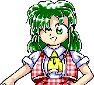

- Welcome to Touhou Wiki!
- Please register to edit. For assistance, check in with our Discord server or IRC channel.
Yuuka Kazami
Yuuka Kazami ka̠za̠mi jɯᵝːka̠ (♫) Yuka Kazami | |
|---|---|
 Yuuka Kazami in Phantasmagoria of Flower View Flower Master of the Four SeasonsMore Character Titles | |
| Species | |
| Abilities |
Manipulation of flowers |
| Age |
At least over 60, implied to be very old |
| Location |
|
Music Themes | |
| |
Appearances | |
| Official Games | |
| |
| Print Works | |
| |
| Music CDs | |
| |
| Other | |
| |
Yuuka Kazami (風見 幽香 Kazami Yuuka) is a long-lived youkai called the "Flower Master of the Four Seasons" whose main place of activity is the Garden of the Sun, a field completely covered in sunflowers. She loves seasonal flowers, so throughout the year she moves to the respective places where the flowers grow: spring flowers for spring, summer flowers for summer, autumn flowers for autumn and sometimes winter flowers for winter.
General Information[edit]
Yuuka made her first ever appearance in the fourth PC-98 Touhou Project game Lotus Land Story as both the fifth stage boss and the final boss. She then appeared as a playable character in Mystic Square. Afterwards, she reappeared as a playable character in the ninth work Phantasmagoria of Flower View. Additionally, she has made a guest appearance as an unlockable character in the Seihou Project's second game, Kioh Gyoku.
Yuuka is a caretaker of flowers of all seasons, likened to a force of nature holding tremendous power. She is presumed to be very old given her demeanor and knowledge of the causes behind the Great Barrier Incident of Sixty Years. Her main place of activity is the Garden of the Sun. She used to reside in Mugenkan, the mansion at the boundary between Gensokyo and the Fantasy World, guarded by two gatekeepers - Elly and possibly Kurumi.
Personality[edit]
Yuuka is a troublesome and playful youkai. She holds strength in high regard and likes to look down on and toy with those weaker than her. She's sharp-witted and thoroughly enjoys rubbing people the wrong way through various methods, ranging from simply joking around with her opponent[1] to (falsely) claiming credit for causing an incident[2]. Her Perfect Memento in Strict Sense article states her threat level as "very high" and her human friendship level as the "worst". However, she also tends to visit the Human Village and comes off as fairly polite, in addition to often appearing at the Hakurei Shrine on peaceful terms (like in her Phantasmagoria of Flower View ending, for example), meaning this could possibly be an exaggeration.
Yuuka is shown to be rather dormant due to her age - in Lotus Land Story, rather than directly participating in the incident she caused, she simply goes to sleep as if ignoring it. In the Windows series, this is further reinforced - she doesn't move from the Garden of the Sun nearly at all, and thus usually doesn't actively seek opponents. However, there are exceptions to this when something catches her eye, as shown in her excursions in Mystic Square and Phantasmagoria of Flower View.
In Kioh Gyoku, ZUN referred to her as Youkai Moe in her profile. Various official materials follow similar suit with her smiling in a sunflower field in her Perfect Memento in Strict Sense's article, and her background appearance in Hopeless Masquerade has her sitting with a smile and waving.
Ability & Strength[edit]
Yuuka is said to be impressively strong. She is stated to be one of the strongest youkai in the victinity of the Hakurei Shrine in Mystic Square.[3] Her Perfect Memento in Strict Sense article says that she sports extremely high power and physical abilities, which she uses to mercilessly eliminate any disturbances. She is also compared to a manifestation of nature, akin to a Fairy, albeit far stronger.[4] Out-of-universe, ZUN has also stated her to be a very strong boss.[5] Additionally, while this can hardly be considered a display of strength, she is not always shown to take damage after a battle when encountered as a boss in Phantasmagoria of Flower View - Mystia Lorelei and Cirno, rather than actually defeating her after technically "winning" in their own scenarios, escape from her instead. In Lyrica Prismriver's scenario, she is still shown unharmed, although Lyrica doesn't seem to escape and has a quite friendly conversation with her after the battle instead. Medicine and Komachi, however, apparently defeat her for good.
However, despite her strength, she appears to move quite slowly in all of her appearances - both as a boss, slowly drifting across the screen in Lotus Land Story, as well as when she's playable - her movement speed is the slowest of all characters. This could be deliberate, as she can move quite fast when using her ability of turning into a ball of light.
- Ability to manipulate flowers
Yuuka is capable of manipulating flowers - making them bloom, shifting the faces of sunflowers towards the sun, or making withered flowers bloom again. As implied in her title, she can use it for flowers of all seasons. This ability is considered to be more of a small addition to her physical abilities, but it can manifest in destructive ways - for example, she destroys the Hakurei Shrine using a giant flower in one of Lotus Land Story's endings.[6]
- Turning into a ball of light, teleporting
In Lotus Land Story, Yuuka is shown to be capable of turning into a ball of light, allowing her to move at a speed much higher than usual. She also teleports around the screen in most Stage 6 attacks.
- Cloning herself
In the same game, Yuuka is capable of splitting herself into two. The clone doesn't appear to be independent, as it uses the same patterns as Yuuka, firing them simultaneously with her.
Possessions[edit]
- Parasol
Yuuka always has a parasol with her that's apparently the only flower in Gensokyo that never withers,[7] but it's unclear if it can turn into a flower, actually is a flower, or if this is a mere metaphor. According to Rinnosuke, it is a special parasol capable of cutting ultraviolet rays, as well as blocking both rain and danmaku.[4] Yuuka uses it to perform graceful attacks.
Background Information[edit]
Name[edit]
Her full name is Yuuka Kazami (風見 幽香). The characters for "Yuuka" (幽香) mean "dim scent" or "fragrance". "Kazami" (風見) literally means "wind watching" and is also the term for a weather vane. She had no surname in the PC-98 games and Kioh Gyoku.
Design[edit]
In Lotus Land Story's official art, Yuuka has green eyes and straight, waist-length hair which covers her right eye. In her first appearance at Stage 5, she wears light pink pajamas and a nightcap. She also carries a large pink pocket-watch with roman numerals. In the final stage, as well as in Mystic Square and Kioh Gyoku, Yuuka is wearing red plaid pants and a waistcoat of the same color and pattern over a plain white shirt with a yellow ribbon tied around the collar, in addition to carrying her signature parasol. Unusual among Touhou characters, Yuuka is not ornamented with any hair accessories or hats (her nightcap notwithstanding). In appearances after Lotus Land Story, her hair is wavy and cut to shoulder-length.
In Mystic Square, she is shown with a baton when she uses a bomb as a Ten Carat Torte reference.
As of Phantasmagoria of Flower View, she wears a red plaid skirt instead of plaid pants and, as in Kioh Gyoku, her eyes are red. Her Hopeless Masquerade sprite shows her wearing stockings in addition to this outfit.
Yuuka's illustration in Kioh Gyoku was done by ZUN himself and was used as the basis for her current design.[5] Unlike in other appearances, her cut-in boss attack image shows her to have four green and purple wings, and her boss sprite has six wings of light.
Yuuka's alternative outfit in Phantasmagoria of Flower View is the same as her normal outfit, except her dress is blue.
Yuuka Kazami's Appearances[edit]
PC-98[edit]
- Lotus Land Story
Yuuka was the one behind the events of Lotus Land Story, where she sent youkai to destroy the Hakurei Shrine because she had "spare time". Since she was suddenly challenged to fight, she showed up with a pink negligee and nightcap, accepting the challenge. Given how Reimu Hakurei started out at noon and Marisa Kirisame started out at night, it is unknown just at which hour the stage is meant to take place. She used sparkly bullets, as well as a giant laser, potentially being the inspiration for Marisa's Master Spark.
Afterwards, when she was defeated, she ran off, only to be pursued into the sixth stage by the heroine, where she showed up with the appearance similar to her Windows outfit. Not affected at all by her sudden wake-up and fight, she once again fought with her opponent. After the two long battles, she was finally exterminated.
- Mystic Square
- Main article: Mystic Square Story
Her title was "Oriental Demon" (Orange, the first stage boss of Lotus Land Story, also has this title). There was an incident caused by Makai, and Yuuka had free time, so therefore she went to Makai to play.
Windows[edit]
- Phantasmagoria of Flower View
- Main article: Phantasmagoria of Flower View Story
Yuuka, being a Youkai that's been around for a long time, knew exactly what was happening when this incident started, but took time to realise it was 60 years ago the previous incident occurred. Of course being the youkai of flowers helped too, but unfortunately that also put her straight at the top of everyone's suspect list when they found her enjoying the flowers. She eventually encounters Eiki Shiki, Yamaxanadu and gets lectured for living too long and teasing others. Eventually, they fight to prove who's the strongest, with Yuuka winning.
- Hopeless Masquerade
Yuuka appeared in the fighter Hopeless Masquerade as a background cameo on the Hall of Dreams' Great Mausoleum stage. She's seen quietly waving and smiling.
Literature[edit]
- Silent Sinner in Blue
Yuuka was briefly shown in Chapter 9 of Silent Sinner in Blue, where she attended the party at the Scarlet Devil Mansion about the Moon Rocket.
- Oriental Sacred Place
Yuuka makes a brief cameo on chapter 18 of Oriental Sacred Place, where Sunny Milk makes a reference as to how Reimu Hakurei exterminates youkai, but they don't actually get "exterminated". She appears with many other youkai.
- Wild and Horned Hermit
Yuuka was at the flower viewing during Chapter 16 of Wild and Horned Hermit. It appears that she drank from the "Ibaraki Box of a Hundred Medicines" and thus gained the personality of an oni for a while. In Chapter 23, she is seen at the shrine with other youkai, while Reimu is doing fortune-telling for them.
- Forbidden Scrollery
Yuuka was briefly shown on Chapter 10 Forbidden Scrollery, attending the Noh play performed by Hata no Kokoro at the Hakurei Shrine. She appears to be interacting with Reimu and Seiga Kaku.
Seihou Games[edit]
- Note: This section is part of the Seihou Project by the Doujin circle "Shunsatsu sare do?".
- Kioh Gyoku
- Main article: Kioh Gyoku Story
Yuuka appeared in Seihou Project's second work Kioh Gyoku, a danmaku game by the junior doujin circle "Shunsatsu sare do?", to which ZUN contributed music and art. Her title was "Beauty of the Twilight" and her theme was "Lovely Mound of Cherry Blossoms ~ Flower of Japan". To add to this, Reimu Hakurei and Marisa Kirisame made guest appearances in the previous work, Shuusou Gyoku.
Like the other playable characters, Yuuka has no story mode. She was one of the few who fought without a spaceship, along with VIVIT and Muse (although Erich wasn't using a spaceship, but a high-performance mecha). As she came from another world, no one recognized her. She was merely referred to as "foreign" by Milia, who also boasted about her speed. VIVIT remarks that she feels familiar, referring to her encounter with Reimu and Marisa in Shuusou Gyoku. Gates said that Yuuka's fighting style was completely different and that he wanted her data, and Marie thought the battle between her and Yuuka was "eccentric". The last boss, Muse, felt a "different divinity" in Yuuka.
Gallery[edit]
Yuuka artwork from Phantasmagoria of Flower View
Relationships[edit]
Reimu and Marisa[edit]
It appears that Yuuka has known Reimu Hakurei and Marisa Kirisame before the events of Phantasmagoria of Flower View through meeting them during Lotus Land Story. She describes Marisa as "grown up quite a bit" and tells Reimu that she's "still being a poor shrine maiden".
Yuuka was the one who sent youkai to destroy the Hakurei Shrine during Lotus Land Story. Marisa sees her as a "strange fellow".
Minor Relationships[edit]
In PC-98, Yuuka seems to have some kind of relationship with Elly, since she's the gatekeeper of Mugenkan.
Skills[edit]
Spell Cards[edit]
Additional Information[edit]
- Yuuka is thought to be the original user of the spell card "Master Spark", which Marisa Kirisame subsequently copied. Yuuka is also known for what is commonly referred to as the "Dual Spark", two slightly smaller beams fired simultaneously when she makes a clone of herself during Lotus Land Story.
- In Mystic Square, Yuuka's player sprite is the only one outlined in blue. In Phantasmagoria of Flower View, the outline is gone.
- Yuuka, along with the Prismriver Sisters and Mystia Lorelei, is the only spell card-using character not to appear in Shoot the Bullet.
- Yuuka is also the only pre-Undefined Fantastic Object character to not have an article in The Grimoire of Marisa.
- Her attacks in Phantasmagoria of Flower View comparatively resemble attacks from Kioh Gyoku, where her shot and bomb was similar, her attack range was wide, and the shape and form of her danmaku had the theme of flowers.
- Her bad ending in Mystic Square has her breaking the fourth wall and kindly telling the player to rest, then try clearing the game again.
- If the Seihou Project canon were ever linked with the Touhou Project canon, Yuuka would be the only known Touhou character to have actually destroyed multiple, physical spaceships and aircrafts. UFOs appear in Undefined Fantastic Object where Reimu, Marisa and Sanae Kochiya appear to take them down, although these were fake because they were actually Seeds of Unknown Form.
Fandom[edit]
Official Profiles[edit]
|  | 幽香（ゆうか） ・・ 妖怪さん
|
Yuuka Youkai One of the strongest youkai living around Hakurei Shrine, but her personality is such that one can never tell what she's thinking, so she's a very uncharismatic youkai. |
| ○四季のフラワーマスター 風見 幽香（かざみ ゆうか） |
Flower Master of the Four Seasons Kazami Yuuka A youkai that lives in Gensokyo. She has the ability to manipulate flowers. Without a destination in mind, she enjoyed the flowers as she slept and awoke, as her pattern continued. |
Official Sources[edit]
- 1998/08/14 Lotus Land Story
- 1998/12/30 Mystic Square
- 2001/12 Kioh Gyoku
- 2005/08/14 Phantasmagoria of Flower View
- 2006/12/27 Perfect Memento in Strict Sense - Yuuka Kazami
References[edit]
- ↑ Lotus Land Story/Story/Marisa's Scenario#Final Stage
- ↑ Phantasmagoria of Flower View/Story/Yuuka's Scenario#Yuuka vs. Aya (Episode 7)
- ↑ Mystic Square/Translation/Manual
- ↑ 4.0 4.1 Perfect Memento in Strict Sense - Yuuka Kazami
- ↑ 5.0 5.1 Strange Creators of Outer World/Who's Who of Humans & Youkai in Gensokyo/Yuuka Kazami
- ↑ Lotus Land Story - Bad Ending (ReimuB)
- ↑ Phantasmagoria of Flower View - vs. Tewi.
| This page is part of Project Characters, a Touhou Wiki project that aims to write proper descriptions for all official characters of Touhou Project. Please keep the character page guidelines in mind when contributing. |